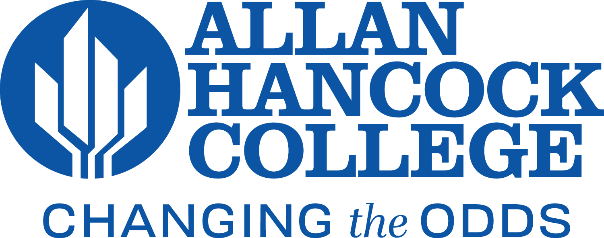
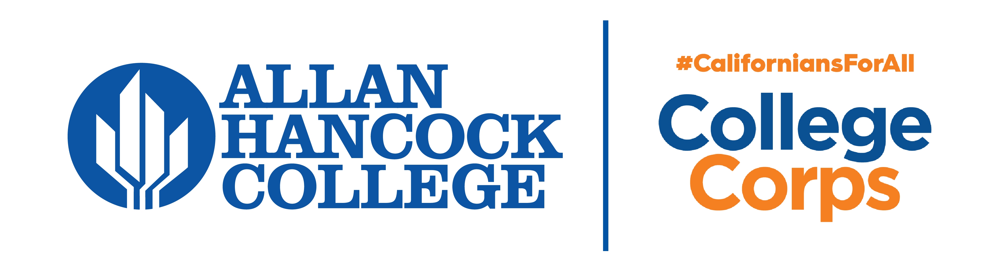
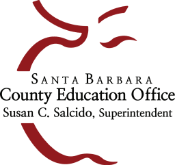
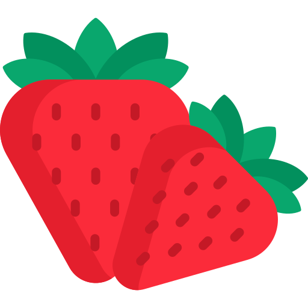

Work Experience

Cybersecurity Intern - Information Technology
Allan Hancock College IT Dept.
February 2026 – Present
Develop and present cybersecurity best practices to students and staff. Support data center operations by auditing hardware, managing inventory, and decommissioning outdated systems. Conduct website quality assurance by identifying and resolving bugs, broken links, and inconsistencies to improve performance and user experience. Support the implementation and evaluation of security tools and assist in identifying security risks and system vulnerabilities.
Owner / Operator
Cardenas Auto Detail
August 2025 – Present
Founded and manage a mobile auto detailing business, handling customer service, scheduling, branding, and business operations.
Special Project: Website Development
Allan Hancock College
August 2025 – October 2025
Worked on a special project with the Dean of Academic Affairs to develop and implement a Django-based web application that helps faculty generate syllabi more efficiently. Supported deployment and integration into the college system while helping ensure smooth performance and usability.
Student Worker
Allan Hancock College: Career Center / College Corps
October 2022 – Present
Serve as a student worker supporting both the Career Center and College Corps with student services and program operations. Assist students with job searching, resumes, interview preparation, and general career support. Help with workshops, campus events, outreach materials, social media, logistics, and student support for College Corps activities.

Interim Career Center Program Specialist – College Corps
Allan Hancock College: Career Center
September 2024 – December 2024
Temporarily filled the role of Program Specialist for the College Corps initiative, ensuring smooth operation of program activities. Coordinated site visits, tracked fellow hours, organized monthly training sessions, and developed visual materials for outreach and internal events.

Student Intern
Santa Barbara County Education Office: Early Care & Education Program
January 2022 – April 2022
Provided general administrative support at a county office focused on early childhood education. Managed phone calls, organized documents, and prepared materials for families and staff while ensuring confidentiality and accuracy.

Agricultural Worker
Cardenas Bros. Farming Inc.
Summer 2021 & 2022
Worked seasonally in strawberry fields performing harvesting, sorting, and quality control. Operated agricultural machinery and supported supervisors with crop care, fertilizer preparation, and daily field operations under challenging conditions.